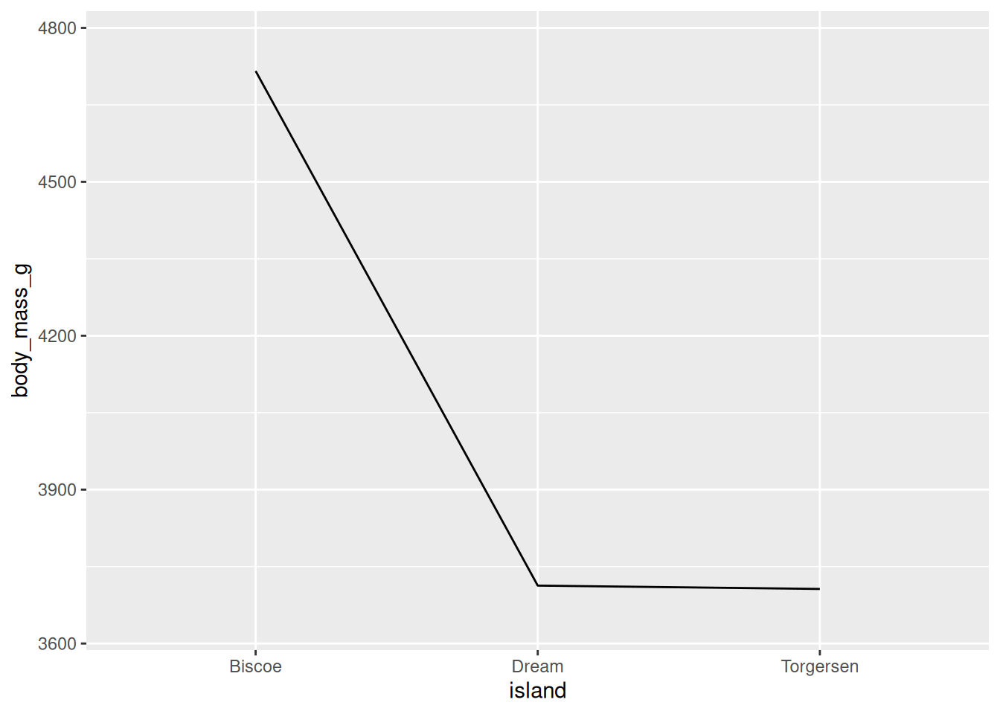
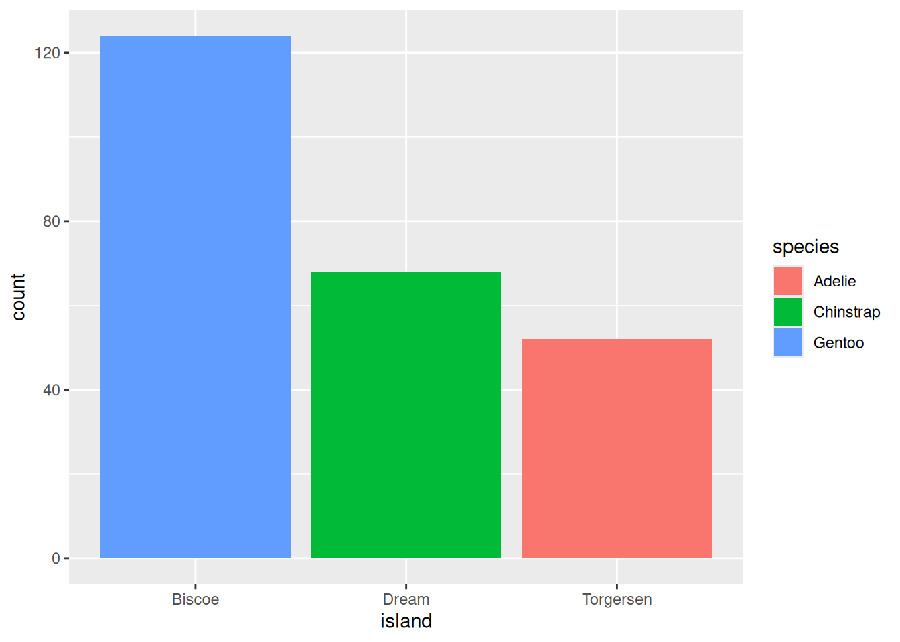
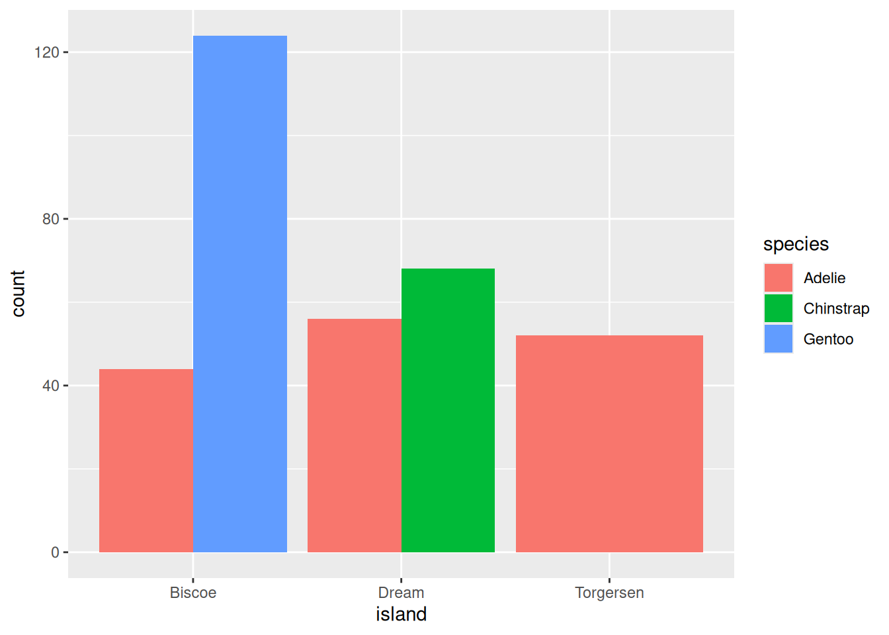
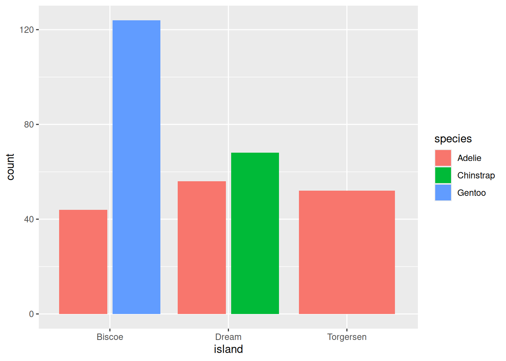
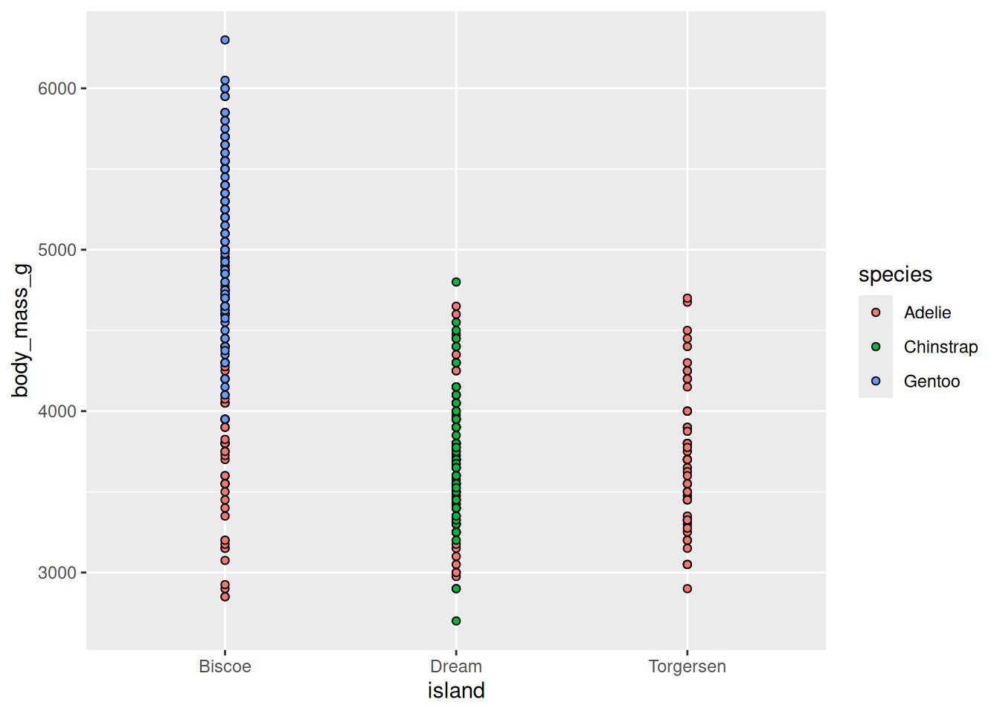
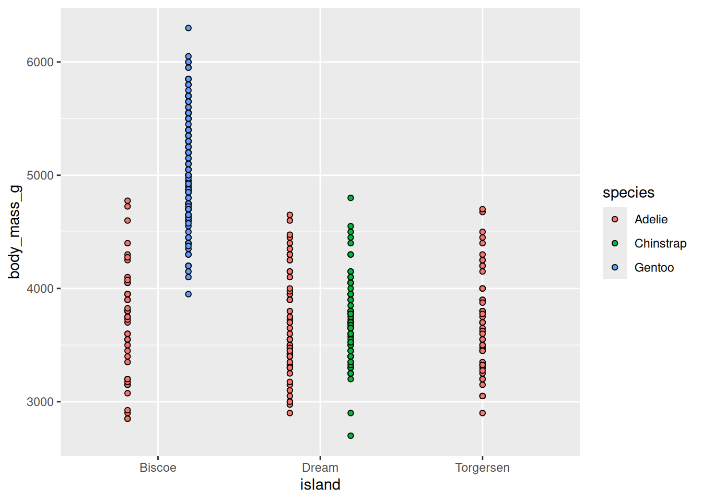
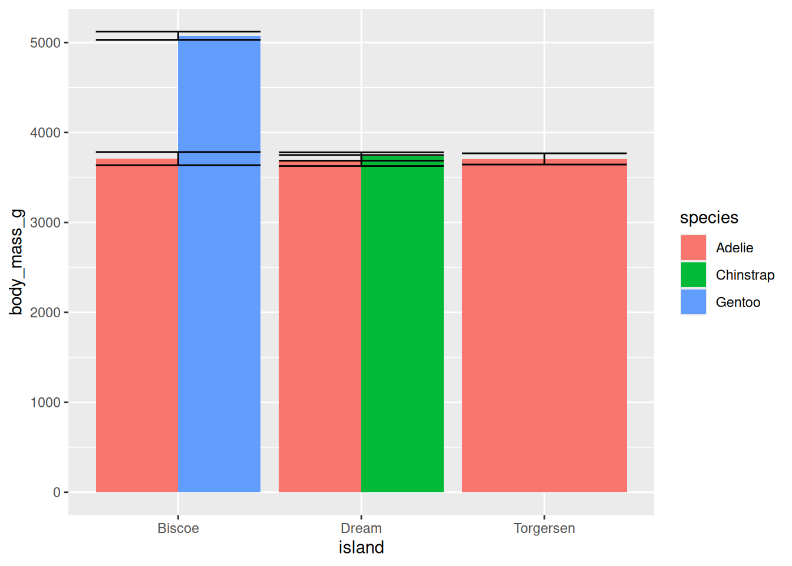
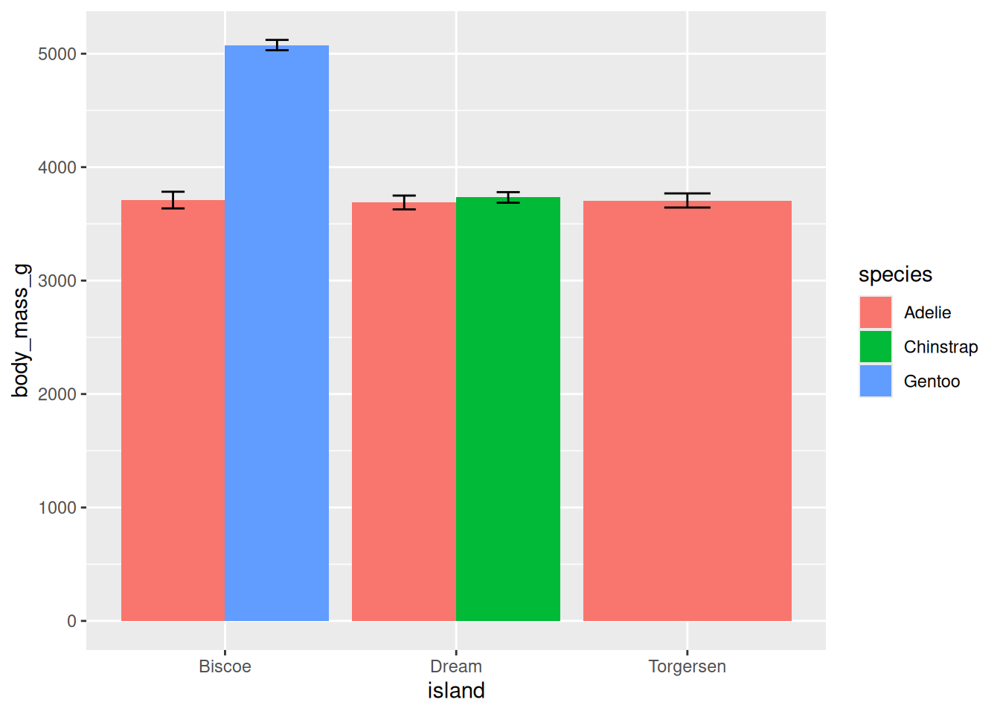
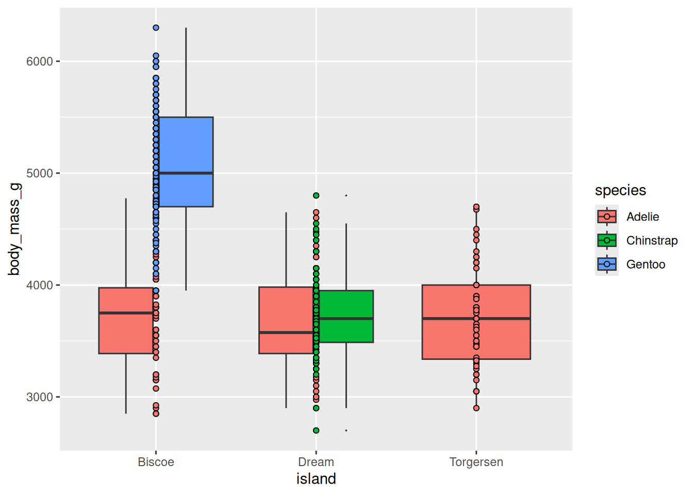
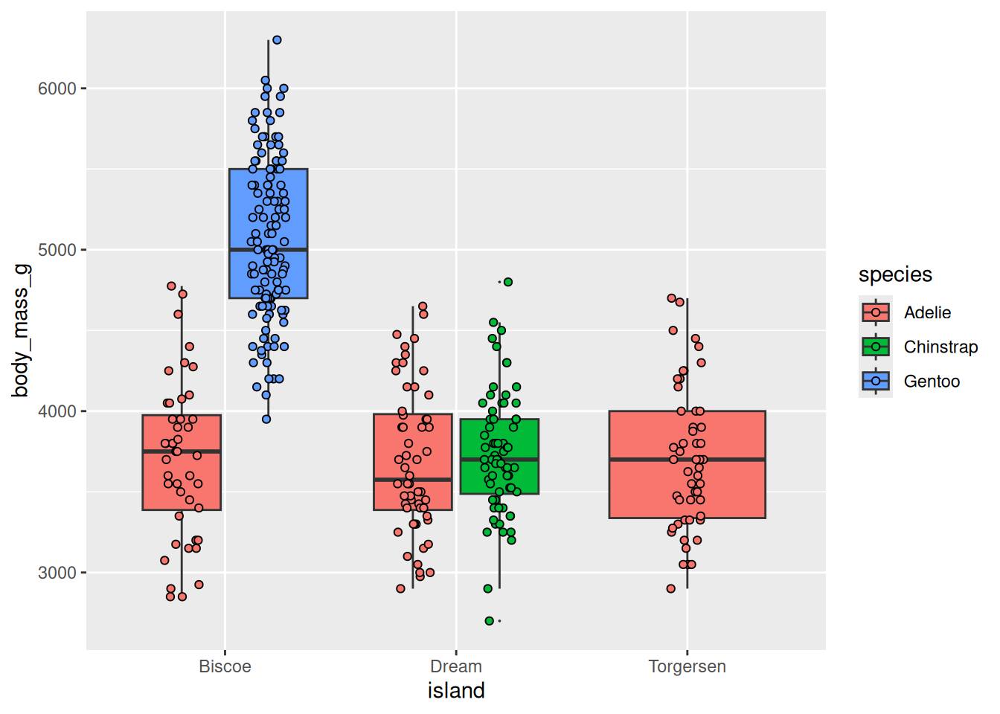

11 Additional Aesthetics
This section gives a few more tips to make graphs that are more readable and interpretable to your audience (and yourself!).
11.0.1 Groups
Previously, when you made a line plot that looked something like this:

It was noted that since body_mass_g (the x-axis variable) is categorical, ggplot will try to draw individual lines for each island (category/level) by default. Since, there was only one value for each island (the mean), and at least two points are needed to create a line, you had to tell ggplot that each group only had 1 data point by using the group argument.
This notion of grouping is very powerful and is another way you can plot subsets of data without having to make changes to, or manually compute summaries from, your raw data.
For example, you can look at how body mass (y) changes across island (x) for different sexes by grouping by sex.
penguins %>%
ggplot(aes(y = body_mass_g, x = island, group = sex, color = sex)) +
geom_line(stat = "summary")
When you are grouping your data in your visualization code, you may run into some instances where your graph winds up looking funky. Most often this is the result of overlapping geoms.
To fix that, you will have to think about positions…
11.0.2 Positions
ggplot2 has a number of position/adjustment arguments that can be used in these cases. In fact, you have already used one! Jittering is a position adjustment. So, while you can create a jitter plot using geom_jitter(), you also could accomplish the same thing using geom_point() and setting a position argument. e.g.,
geom_point(position = "jitter") or geom_point(position=position_jitter())
These in effect do the same thing. However, if you want to include any specific arguments (e.g., specify how much vertical or horizontal jitter to have), you can only do so by using the longer position_jitter() format. This helps create reproducible graphs, as the jitter is otherwise random every time the code is run to create the graph! Changing the positional adjustments can drastically alter the visualization you generate.
Here are a few quick examples of graphs that came out looking funky, and how using positional adjustments can fix that.
11.0.2.1 Identity
Most things start with “identity” as their default position argument. Identity just overlaps the elements:

This often results in some elements of your visualization being hidden (which definitely seems counterproductive).
11.0.2.2 Dodging
position = “dodge” places overlapping objects directly beside one another. This makes it easier to compare individual values.
penguins %>%
ggplot(aes(x = island, fill = species)) +
geom_bar(position = position_dodge())
penguins %>%
ggplot(aes(x = island, fill = species)) +
geom_bar(position = position_dodge2())
Note: The difference between dodge and dodge2 is that the latter creates a bit of space between the elements. You will also notice that, compared to identity, the scale of the y-axis for both of these graphs changed.
This is useful for geoms other than bars as well:
penguins %>%
ggplot(aes(y = body_mass_g, x = island, fill = species)) +
geom_point(shape = 21)
penguins %>%
ggplot(aes(y = body_mass_g, x = island, fill = species)) +
geom_point(shape = 21, position = position_dodge(width = .75))
Probably the most common use case for this will be with error bars and CIs. Observe the following. If I dodge the stat_summary() function with the “bar” argument, but not the other stat_summary() with the “errorbar” argument, it comes out looking funky:
penguins %>%
ggplot(aes(y = body_mass_g, x = island, fill = species)) +
stat_summary(fun = "mean", geom = "bar", position = "dodge") +
stat_summary(fun.data = "mean_se", geom = "errorbar")
Adding position adjustments to both functions corrects this!
penguins %>%
ggplot(aes(y = body_mass_g, x = island, fill = species)) +
stat_summary(fun = "mean", geom = "bar", position = "dodge") +
stat_summary(fun.data = "mean_se", geom = "errorbar", position = position_dodge(width = 0.9), width = .2)
Sometimes you will want to simultaneously dodge and jitter. You can do both with jitterdodge. (Not to be confused with jitterbug…)
penguins %>%
ggplot(aes(x = island, y = body_mass_g, fill = species)) +
geom_boxplot(outlier.size = 0) +
geom_point(shape = 21)
penguins %>%
ggplot(aes(x = island, y = body_mass_g, fill = species)) +
geom_boxplot(outlier.size = 0) +
geom_point(shape = 21,
position = position_jitterdodge(jitter.width = 0.3))
This is still quite cluttered and needs more work, but way better than before!
11.0.2.3 Stacking
position = “fill” works like stacking, but makes each set of stacked bars uniform in height. This makes it easier to compare proportions across groups.
penguins %>%
ggplot(aes(x = island, fill = species)) +
geom_bar(position = position_fill())
However, this can be misleading. Recall that the total number of species == “Gentoo” penguins is much greater than species == “Chinstrap”, even though they do not look TOO different here. So while you can compare the proportions easily, those proportions may correspond to drastically different raw numbers.
11.1 Best Practices:
Below are some guidelines and best practices that should be considered when designing your visualizations.
- Graphs should be EASILY readable, first and foremost. This should be the top design philosophy when constructing your graphs.
- Label everything (axes, titles, legends, anything else) and make labels intuitive.
- Follow conventions: y = response variable, x = predictor, be mindful of variable types, etc.
- People should not need to review the caption to understand what the visualization is showing.
- Graphs should be purposeful
- What is the specific relationship or trend in your data that you are trying to communicate with this visualization?
- Graphs should facilitate quantitative interpretation and comparison, and allow for inferential statistics by eye.
- Represent variability (show the full distribution, include error bars or confidence intervals).
- Show relationship trends, means, etc.
- Cool =/= best.
- Just because you can make some crazy complex graph that visualizes a lot of different variables, or might even be interactive and show you a lot of information, does not mean that is the best thing to do. Just because you CAN do something does not always mean you SHOULD. Keep things simple and clean, following the conventions for that type of data or relationship.
- Make your visualization aesthetically pleasing but not at the cost of wasting ink.
11.2 Extra Resources
- ggplot2 reference
- R graphics cookbook
- ggplot2 book
- ggplot2 cheat sheet
- Help understand different types of graphs
- Recommendations on best graphs for visualizing particular relationships
- r-specific information on how to construct graphs
- More r-specific stuff. Top 50 ggplot geoms
- Info on plotly
- ggplot2 extensions
- Fundamentals of Data Visualization
11.3 Citations
As always, most illustrations by Horst (2022)